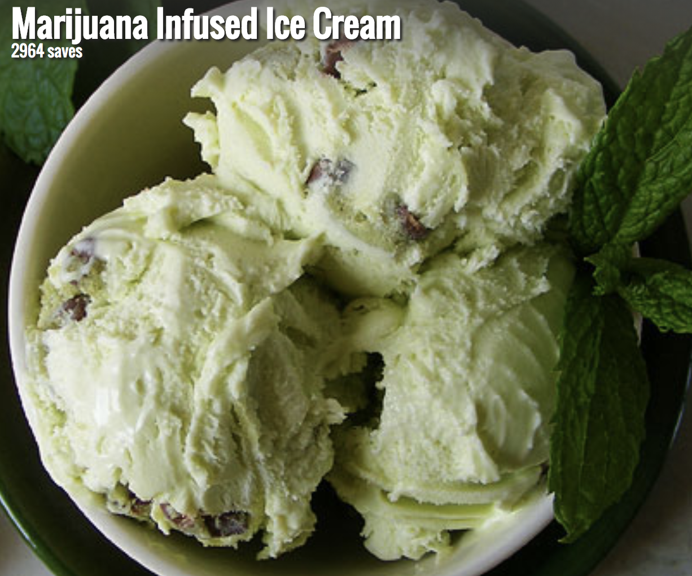
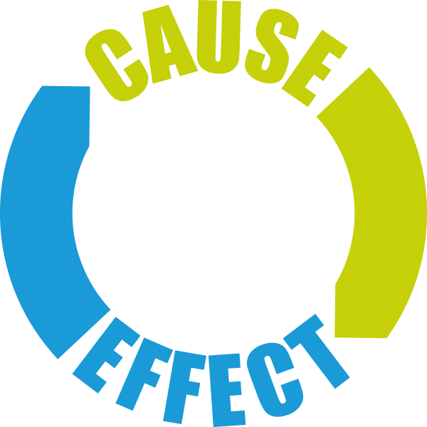

chapter17.1--handout
Background Information
Americans' way of housing（美式住宅）
今天的内容中，Douglas的妻子特别喜欢打理他们的庭院，working on their lawn（打理草坪）, pulling weeds（处理杂草）, fertilizing（施肥）, cutting the grass twice a week（修剪）...感觉特别忙碌且充实，这些都是在美国中产中特别日常的活动。一般别墅类住宅具备这样的设施，包括：
- Townhouse
联排独栋别墅
Townhouse一般是两户人家的house联排，都在同一栋建筑，但中间有墙隔离，每家都有各自独立的门牌（所谓的双拼房）。业主同时拥有其房屋的所有权与其自带土地的土地权，面积一般在140—300多平方米之间。
💧优点:
属于城市的边缘地带，既满足了回归乡野宁静的愿景、又实现他们别墅的梦想；
空间较大，格局分明，附带门前庭院与车库；
有一定的升值潜力；
让人们从都市的拥挤中解脱出来，适合养老。
💧缺点:
中间只有一堵墙相隔，隐私性较差。
内部设施的维护由屋主自己负责。
💧适合对象:
经济压力不大，疲于城市生活的购房者；
既想房产升值，又想有一定租金收益的购房者；
准备养老的人群。
💧房价:
1,200,000美金上下（亏损可能极低）。 - Single-Family House
独栋别墅
Single-Family House比起townhouse来说，就是完全独立的建筑，业主拥有自己的房屋产权与土地产权，一些基本的维护与管理工作，类似打扫庭院卫生、秋天扫落叶冬天扫雪之类的，都是业主自己负责。
💧优点:
有更好的独立空间与隐私性；
通常都配有自己的庭院与车库；
外观风格多样；
由于独栋别墅的稀有性，使独栋别墅的升值空间非常大。
💧缺点:
成本过高
难以打理
比较稀有
💧房价：
$2,000,000+ - Multi-Family House
多家庭独立住宅
从房屋的外观来看，Multi-Family House与独立屋住宅并无多大差异，但是住宅里的格局会有很大不同。多家庭独立住宅可以隔成2-4户房型。每一间都是独立的一套房子，配套了各自的客厅，厨房，卧室和卫生间，整栋建筑都归于一个业主所有，其维护工作也都由屋主承担，租客们的维护工作也由屋主承担。
💧优点：
投资者购买Multi-Family House，自己住用一个单元，其他闲置单元都可以出租。每个单位都会有资金回报，是一种更安全的投资方式。相比之下，独栋别墅的租金收入只能来自一个租户。
适合几代人同住。
据目前市场分析，Multi-Family House的市场价格将呈现不断增长的趋势。
💧缺点：
空间被分割；
与其他的住户一同居住在一个独立屋，隐私性较差；
基本在郊区或非市中心的地带，交通不便。
💧房价：
$250，000上下
当然除了中产们的别墅类住宅，年轻人们、小白领们更多会选择公寓式住宅，最常见有两种： - Apartment
公寓
Apartment就是我们最熟悉的住房形式了（英式英语也叫做flat），公寓大多是年轻人群体的选择，他们热爱城市生活，而且不想生活在恬静的小村庄里。在美国，公寓的配套设施十分完善，有洗衣间、供暖、空调、健身房、游泳池、停车场、门卫甚至还有小教堂，小区周边也有生活便利超市。
公寓的所有权可以是公司和个人。以公司形式存在的公寓通常是由公司进行管理，这一类的公寓不出售，只招租。而个人形式的公寓，就是个人通过买卖获得了公寓的所有权。这种房屋可以投放到市场招租或者出售，也可以自己居住。不过这儿小编还想带大家更细致地了解不同Apartment—Walk up式和Elevator式，其实主要的区别就是有无电梯。 - Condo
独立产权公寓
从外形上来说Condo和Apartment没有区别，Condo只是房屋产权形式并不是房屋类型。Condo和Apartment最大的不同，是Apartment整体以单一个人或单一公司持有; Condo则是以其中的一个单位以单一或单一公司持有所以每年业主需要缴纳房地产税。
所以如果是租Condo的话，通常都是与屋主签订租房合同，而不是房产公司。当然整栋建筑还是会有委托的物业公司进行日常维护。如果你居住或者租住在Condo里面, 你想对房屋的内部或者阳台进行改善必须经得物业管理公司的同意。对于Condo式房子来说，有电梯式要比无电梯式明显多很多。
Vocabulary
ferret
💧vt. search and discover through persistent investigation
💧ferret out 搜出，搜获
很多例子中都可以用哦：
The police failed to ferret out the truth.
警察未能查明真相。
She had the ability to ferret out the facts.
她有能耐把事情搞个水落石出。
💧做名词的时候，ferret也表示雪貂，很稀有的一种小动物：
weed
💧Weed这个词有很多意思，文章中用到的很常见啦，就是:
any plant that crowds out cultivated plants
杂草
💧另外还是删除、剔除的意思，尤其是weed out.
Weed out unqualified applicants.
剔除不合格的申请人
💧再另外，weed还是street names for marijuana...如果你遇到有人问你要不要/有没有weed，不要傻呵呵的以为是草吼，人家是要卖你大麻的...

Crush Your Problems
- If you say to yourself, "How would I feel, how would I react if I were in his shoes?" you will save yourself time and irritation, for "by becoming interested in the cause, we are less likely to dislike the effect."
如果你扪心自问，“如果我是他会怎么想”，那么你会为自己省去很多时间消耗和烦恼，因为“通过对原因的了解，我们也就不大会不喜欢他的结果”。
💧If I were in his shoes是不是很眼熟呀？卡叔特别爱用in one's shoes的说法，把自己带入到别人的立场。
💧Save yourself...很形象的理解：省得你...，在写作中可以用来替换don't have to，比如：
People don't have to spend too much time and money on commute if they prefer to live on campus.
可以改写为：
Living on campus could save people a great deal of time and money that ought to be spent on commute.

💧cause & effect—因果逻辑关系
英文中很大的一个特点就是说话特别注重逻辑，很多时候写文章的也是一样的思路，尤其是议论文（argument），一般会在开头写清楚自己的论述目的，比如开头说一件事情的effect是什么，之后分类说明不同的cause，最后做总结summary，这也是经典的英文议论文五段式的写作方法。
给大家举个例子：
❓question：
Does urbanization have an impact on global warming?
💡文章的effect是：
Thesis: urbanization boosts green house effect.
城市化加速了温室效应，因此加速全球变暖。【开头段】
💡那么这个现象的原因是几个方面：
cause1：Skyscrapers高楼林立阻挡了热量的扩散。【主体段1】
cause2：Automobile exhaust汽车尾气、Air conditioning等基础设施的排放量更大。【主体段2】
cause3：Tarmac柏油马路白天吸收太阳辐射晚上释放，使得夜晚气温降不下来。【主体段3】
💡最后sum up：
conclusion：Urbanization does have an impact on global warming.【结尾段】
这也是大家可以用在自己的写作当中一个很实用的模板（托福雅思及考研写作都适用哈～四六级用的话可能字数会超...），学会了吗？下次分析文章的时候，不要再简单粗暴的说总分总结构了哦～要注意逻辑的细分呀～（除了cause & effect，其他的逻辑结构，有兴趣的同学仔细阅读卡叔的文章哦～相信你们会有所发现）
- Cooperativeness in conversation is achieved when you show that you consider the other person's ideas and feelings as important as your own.
协同性的达成是这样实现的：当你表现出来，你认为他人的想法和感受是和你自己的一样重要。
💧...is achieved, ...的实现，可以用来替换get，help的一些场景：
Being self-disciplined can help you to be free.
👉Freedom is achieved when you are self-disciplined.
- Starting your conversation by giving the other person the purpose or direction of your conversation, governing what you say by what you would want to hear if you were the listener, and accepting his or her viewpoint will encourage the listener to have an open mind to your ideas.
💧这个句子中间也用到了卡叔超级喜爱的parallelism的句式：
starting...，governing...，and accepting...三个主语的平行，这三件事儿，will encourage...会鼓励listener保持一个开放的心态来看待你的想法。
而且，这三个平行的动作，也是有前后逻辑顺序的哈：
先给出自己的目的和方向来开始对话👉其次管控好你说的话，想想如果你是对方，你想听到什么👉最后接受他的观点，这三个步骤。
感受到卡叔的逻辑思维了吗？当你们自己写东西的时候，也要注意哦～ - I apologized most sincerely for causing him so much inconvenience and remarked that I must be his most troublesome customer as this was not the first time I was behind in my payments.
💧一个标准的正式道歉句：
I apologize most sincerely for causing so much inconvenience.
比起I am sorry/ I am so sorry/ I am so very sorry... 程度要好很多
💧Similarly，你还可以说：
Please accept my sincere apology.
Content Analysis
今天的文章中，卡叔告诉了我们每个人都可能犯错，要学会换位思考，站在他人的立场上想问题。
（Don't condemn them. Any fool can do that. Try to understand them.）
这也是提升自己人际交往能力很重要的一环。
（you will sharply increase your skill in human/interpersonal relationships.）
Sam Douglas的例子很好的说明了这一点，一开始他无法理解妻子喜欢打理草坪的行为，因为在他看来并没有什么改观，所以他们之间在这个问题上总是有些不和谐 （balance of the evening was ruined），之后Douglas在卡叔的指导下，意识到自己的问题，原来自己从未考虑过妻子会从这件事情中受益。
（It never occurred to him that she enjoyed doing that work and she might really appreciate a compliment on her diligence.）
之后Sam做出了改变，两个人之间达成了一个很好的共识。
（A happier life for both because he had learned to look at things from her point of view.）
换位思考能在一方有很大错误的时候对问题的缓解起到帮助。
（Seeing things through another person's eyes may ease tensions when personal problems become overwhelming.）
Elizabeth的例子说明了这一点：她买车的钱欠了6周还没有还到，车行的人很着急，很不友好的电话催她，要求她周一还钱；Elizabeth站在对方的立场思考，主动认错，最终对方也接受了她，并宽限了还款时间。
所以，要学会换位思考，真诚的从他人的出发点考虑事情，也许会成为你职业发展的里程碑哦~（one of the stepping - stones of your career）
Today's Bonus
今天的内容中卡叔说到了面试相关的话题，初入职场或者即将毕业的宝宝，如果要接到跨国企业的面试邀请是不是还蛮期待的呢？但是，很多人第一个环节就会被pass，很大程度上是因为第一印象比较尬...那么今天我们就来梳理一下，如何做一个逻辑清晰的自我介绍、给面试官留下好的first impression吧～
💧How to Introduce Yourself at a Job Interview
- What to Say When You Arrive at the Interview
💧当你到达面试公司的时候，第一个见到的人一般是receptionist（接待人员、前台、HR等），首先要自报家门，说清楚自己是谁、来找谁面试，比如：
"My name is Tim Jones, and I have an interview scheduled with John Smith at 2 pm."
或者"I'm Janine Bellows, and I have an appointment with Jack Clark at 10 am."
- What to Say When You Meet the Hiring Manager
💧当见到面试官的时候，别忘了说一下自己是谁，然后：
👉Offer to shake hands
主动起立、友好地握手
👉Tell the interviewer that it is a pleasure to meet him/her
告诉面试官自己很荣幸有面试机会
👉 smile, and be sure to make eye contact
保持微笑
- Keep Your Introduction Short and Concise
💧简单明了的介绍自己：关键就是——对你面试这份工作有帮助的信息。（没关系的不用说吼，突出重点）
The core of your response should focus on the key elements in your background which will enable you to excel in the job for which you are interviewing.
👉Focus on Your Qualifications
🔜应届生
重点突出自己的教育背景（education background）、学校成绩怎么样（GPA）、有过哪些实习经历（internship）、考过什么证书（certificates）、职业技能（professional skills），尤其是和岗位相关的证书，要注意关联性（如果是面试程序猿，你告诉别人我有化妆师资格证书，可能...会被吐槽吧...）⚠️⚠️⚠️
🔝社会人er
重点突出自己的工作经历（previous working experience）、项目业绩（KPI）等，对于社会人er，教育经历比起来就不那么重要了。 - Be Prepared for Follow Up Questions
准备好可能遇到的后续问题。核心要注意：每个问题的时间要控制一下，简明扼要的说明自己的优势就好啦～
smart word
今天感触最深的是Nirenberg的话：
"Cooperativeness in conversation is achieved when you show that you consider the other person's ideas and feelings as important as your own. "